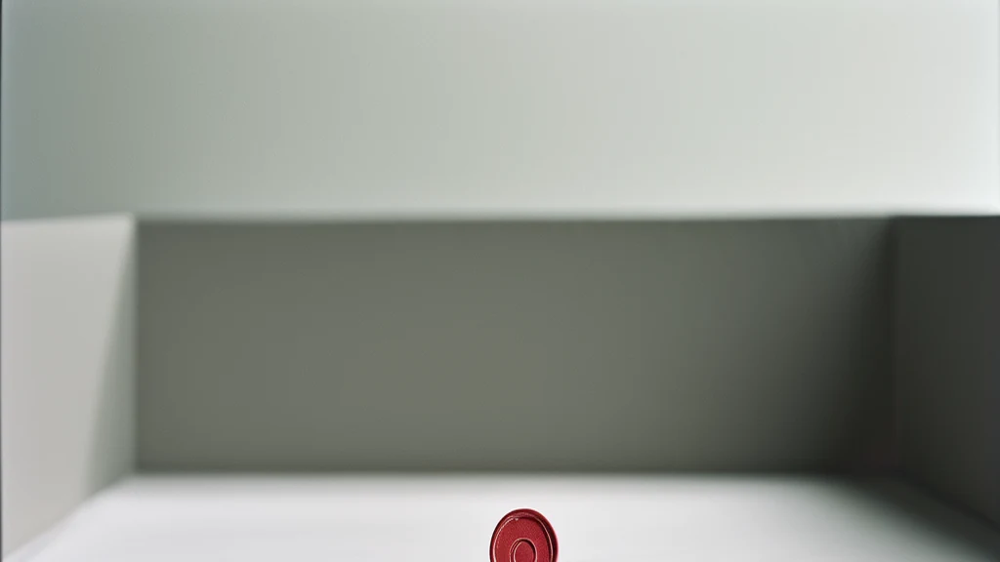
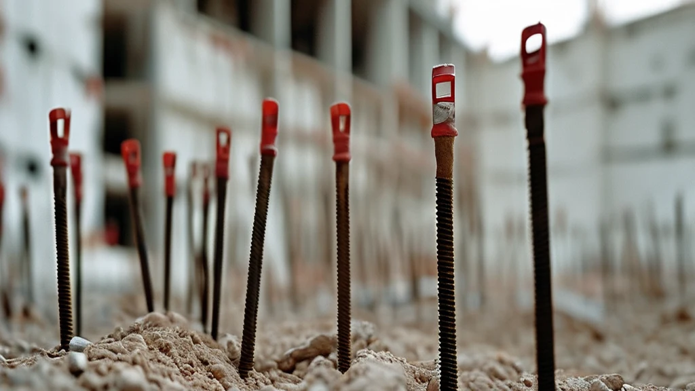

圖片由 AI輔助創作Image by AI
【鄭哥週評】欄目：鄭哥博客週評｜日期：2026-11-22
這個禮拜，我翻開自己那本晨報，有一條線幾乎日日都出現：芯片管制。星期一仲講緊英特爾靠「唔用 HBM」賣爆一張卡，星期二就有十個國家喺舊金山簽《舊金山宣言》，連港口、電力、通信都劃入「共同防務」；到星期四，英偉達自己把 H200 這條特批通道關埋。一日一條，條條都係收緊。 但同一本晨報，後半截仲有一組完全相反嘅數字：半年批咗 87.9 萬顆高階芯片畀中資企業，千問（Qwen）已經喺平頭哥自研芯片上訓練下一代模型。牆越築越細，貨卻越放越多——我判斷，呢個唔係管制失敗，係管制嘅形狀變咗。
圖片由 AI輔助創作Image by AI
一、牆越築越細：由「賣什麼」管到「租給誰」
十一月十五號，美國、英國、日本、韓國等十國喺舊金山簽咗《舊金山宣言》，將敏感技術同關鍵基礎設施——港口、通信、電力、數字平臺——全部劃入共同保護。這是頭一回，AI 供應鏈本身被當成一堵牆嚟修。
兩日後，BIS 出咗一份《限制先進半導體遠程訪問》嘅臨時終規：海外數據中心要向中國、澳門企業提供超過 1200 萬 TPP 算力（大約等於 334 張 B200），必須先領許可證。以前管嘅係「芯片可唔可以賣」，而家管嘅係「算力可唔可以租」。
再隔一日，英偉達臨時 CEO 克雷斯喺財報會上親口確認：唔再向中國出貨經許可嘅 Hopper 數據中心產品，H200 喺內。三季度呢塊對華收入仲有 24 億美元，四季度指引已經剔除咗。
我判斷：這條線一日一條，講明管制由「卡貨」轉向「卡服務」——真正嘅目標，係唔畀中國買到可以持續訓練嘅算力，而唔係一張兩張卡。
來源：財新《英偉達關閉 H200 特批通道》，2026-11-18｜https://companies.caixin.com/2026-11-18/102506208.html

圖片由 AI輔助創作Image by AI
二、口子越批越多：87.9 萬顆照批
如果淨係睇上面呢啲，會以為條通道已經閂死。但美國眾議院外交委員會十一月十九號解密嘅文件講咗另一邊：BIS 喺 2025 年十二月到 2026 年五月，批准向中國企業出售 87.9 萬顆高階 AI 芯片，同期嘅申請係 340 萬顆。
87.9 萬顆，係一個咩概念？一個數據中心用幾萬顆，呢個數夠搭十幾個大型集羣。即係話，同英偉達關 H200、十國簽防務同步發生嘅，係一張張許可證照樣批出去。
我判斷：管制從來都唔係「一刀切」，而係「揀住嚟批」。出口管制呢盤生意，美國自己都要算賬——半導體公司嘅營收、對華貿易嘅籌碼、盟友嘅面子，樣樣都要秤。所以先會出現呢種「禁令越寫越細，貨卻越放越多」嘅奇景。
來源：中國快閃市場《半年批了 87.9 萬顆，對華芯片的口子沒關》，2026-11-19｜https://www.chinaflashmarket.com/newsflash/39381

圖片由 AI輔助創作Image by AI
三、地基喺別處變深：千問上平頭哥、DeepSeek 免搜索費
管制收緊，最直接嘅效果，係逼中國呢邊自己把地基挖深。十一月十九號阿里財報會，吳泳銘講咗一句：千問已經喺平頭哥自研芯片上訓練下一代模型，2027 年之後新增嘅 AI 芯片，絕大部分嚟自平頭哥同其他國內供應商。
同一日，DeepSeek 千億融資落定，騰訊同寧德時代三隻基金各持 9.57%，並列第一大股東。再早兩日，DeepSeek 宣佈把模型嘅搜索、網頁抓取唔再按次收費，只按 token 收。呢啲都唔係孤立事件。
我判斷：芯片係地基，框架同計價係樓面。管制封咗芯片，反而逼出嚟一套「自研芯片＋開源模型＋平價 token」嘅組合。呢條路唔好行，但行得通嘅話，牆反而幫咗對手一程。
來源：東方財富《DeepSeek 千億融資落定》，2026-11-19｜https://finance.eastmoney.com/a/202611193935308693.html
圖片由 AI輔助創作Image by AI
四、賬係咁算嘅：英偉達冇黃仁勳嘅第一個財報
十一月十八號，英偉達出咗第一份冇黃仁勳嘅財報：三季度營收 1158 億美元、同比增 103%，數據中心 1076 億，毛利率 74.9%，三項全部超出預期。上游仲喺狂歡。
但另一邊，港股 AI 硬件開始跌——羅博特科跌超 16%、長飛光纖跌超 10%、中際旭創跌超 8%；內地有基金因為連 50 個工作日淨值低過 5000 萬要清盤，重倉正係北方華創、盛科通信呢啲 AI 硬件。上游狂歡，下游分化，錢開始由「買芯片」轉向「買算力服務」。
我判斷：英偉達嘅數字越靚，越講明一件事——成個行業嘅錢，而家都堆喺上游少數幾間公司身上。管制收緊、貨照批、上游暴賺，呢三樣嘢並存，先至係最值得警惕嘅信號：泡沫同稀缺，係同一條供應鏈嘅兩面。
來源：每日經濟新聞《港股在漲，AI 硬件在跌》，2026-11-16｜https://www.nbd.com.cn/articles/2026-11-16/4648842.html
圖片由 AI輔助創作Image by AI
五、鄭哥點評
將呢啲拼埋一齊，我睇到嘅唔係「中國芯片冇得救」或者「美國自廢武功」，而係一條供應鏈喺高壓下重新分叉。牆築得越高，走貨嘅許可證反而批得越快；禁令越寫越細，國產地基越挖越深。兩邊都喺賭：美國賭時間，睇邊個先斷氣；中國賭縱深，睇自己嘅芯片同框架幾時追得上。
對我自己嚟講，最實際嘅一句係——算力呢樣嘢，由「邊個有芯片」變成「邊個有服務」。管制管到「租給誰」，講明未來真正值錢嘅，係可持續嘅訓練能力同平價嘅推理成本，而唔係倉庫裏面堆咗幾多張卡。做跨境生意嘅人，最好早啲諗清楚自己企喺邊一邊嘅下游。
圖片由 AI輔助創作Image by AI
\[Zheng Ge's Weekly Take\] Column: Zheng Ge's weekly review | Date: 2026-11-22
This week, one thread kept surfacing in my morning briefings: chip controls. On Monday, Intel was selling a card precisely because it skipped HBM; by Tuesday, ten countries had signed the San Francisco Declaration, folding ports, power and telecom into a shared "defence"; by Thursday, Nvidia had shut the H200 license channel itself. One tightening measure, every single day. But the same briefings carried a set of numbers pointing the other way: 879,000 high-end chips approved for Chinese firms in half a year, and Qwen already training its next-generation model on T-Head silicon. The wall grows finer while the shipments keep flowing — my read is that this is not a failure of control, but a change in its shape.
圖片由 AI輔助創作Image by AI
The Wall Gets Finer: From "What to Sell" to "Who to Rent To"
On 15 November, ten countries — the US, UK, Japan, Korea and others — signed the San Francisco Declaration, folding sensitive technology and critical infrastructure (ports, telecoms, power, digital platforms) into a shared protection. This is the first time the AI supply chain itself has been treated as a wall to build.
Two days later, BIS issued a temporary final rule restricting remote access to advanced semiconductors: overseas data centres providing more than 12 million TPP of compute (roughly 334 B200s) to Chinese or Macau companies must first obtain a licence. What was once governed was whether chips could be sold; now it is whether compute can be rented.
A day after that, Nvidia's interim CEO Kress confirmed on the earnings call that it will no longer ship licensed Hopper data-centre products to China, H200 included. The segment still booked US$2.4 billion of China revenue in Q3, but the Q4 guidance has already stripped it out.
My read: one measure a day means control is shifting from blocking goods to blocking services. The real target is not one card or two, but denying China the kind of sustained training compute it can actually build on.
Source: 財新《英偉達關閉 H200 特批通道》，2026-11-18 | https://companies.caixin.com/2026-11-18/102506208.html
圖片由 AI輔助創作Image by AI
The Spigot Opens Wider: 879,000 Chips Approved
Look only at the measures above and you would think the channel is closed. But declassified documents from the US House Foreign Affairs Committee, released on 19 November, tell the other half: between December 2025 and May 2026, BIS approved the sale of 879,000 high-end AI chips to Chinese companies, out of 3.4 million applied for.
What is 879,000 chips? A single data centre uses tens of thousands; that figure is enough for more than a dozen large clusters. In other words, at the very moment Nvidia was closing H200 and ten countries were signing a defence pact, licences were still being stamped out one after another.
My read: control was never a clean cut — it has always been selective. Export control is a business the US itself has to balance: semiconductor revenue, trade leverage, allies' pride. That is exactly why we get this odd picture: the ban gets more detailed, and the shipments keep flowing.
Source: 中國快閃市場《半年批了 87.9 萬顆，對華芯片的口子沒關》，2026-11-19 | https://www.chinaflashmarket.com/newsflash/39381
圖片由 AI輔助創作Image by AI
The Foundation Deepens Elsewhere: Qwen on T-Head, DeepSeek Waives Search Fees
The most direct effect of tightening controls is that China is forced to dig its own foundation deeper. On Alibaba's earnings call on 19 November, Wu Yongming said Qwen is already training its next-generation model on T-Head's self-developed chips, and that after 2027 the vast majority of new AI chips will come from T-Head and other domestic suppliers.
The same day, DeepSeek's massive funding round closed, with Tencent and three CATL funds each holding 9.57% as co-largest shareholders. Two days earlier, DeepSeek announced that search and web scraping triggered during model calls would no longer be billed per request — only tokens count. None of these are isolated events.
My read: chips are the foundation, frameworks and pricing are the floors above it. Controls may block the chips, but they are pushing out a bundle of "domestic silicon + open-source models + cheap tokens." It is a hard road — but if it works, the wall will have done the other side a favour.
Source: 東方財富《DeepSeek 千億融資落定》，2026-11-19 | https://finance.eastmoney.com/a/202611193935308693.html
圖片由 AI輔助創作Image by AI
That's How the Ledger Adds Up: Nvidia's First Earnings Without Jensen
On 18 November, Nvidia reported its first earnings without Jensen: Q3 revenue of US$115.8 billion, up 103% year on year; data centre US$107.6 billion; gross margin 74.9% — all three beating expectations. Upstream is still partying.
But on the other side, Hong Kong AI hardware is falling: Robotechnica down over 16%, Yangtze Optical Fibre down over 10%, Innolight down over 8%. On the mainland, a fund is being liquidated after its net value stayed below 50 million for 50 straight working days — its top two holdings were NAURA and Shenco, both AI hardware. Upstream parties while downstream splits; money is moving from buying chips to buying compute services.
My read: the prettier Nvidia's numbers, the more they reveal that the whole industry's money is now piled on a handful of upstream names. Controls tightening, chips still shipping, upstream earning like crazy — these three coexisting is the real signal to watch: froth and scarcity are two sides of the same supply chain.
Source: 每日經濟新聞《港股在漲，AI 硬件在跌》，2026-11-16 | https://www.nbd.com.cn/articles/2026-11-16/4648842.html
圖片由 AI輔助創作Image by AI
5. Zheng Ge's Take
Put it all together and what I see is not "China's chips are doomed" nor "America is shooting itself in the foot," but a supply chain forking under pressure. The higher the wall, the faster the shipping licences; the finer the ban, the deeper the domestic foundation. Both sides are gambling: America is betting on time, waiting to see who suffocates first; China is betting on depth, waiting for its chips and frameworks to catch up.
For my own part, the most practical line is this: compute is shifting from "who has chips" to "who has a service." Once control reaches "who you rent to," it means what will truly be worth something is sustained training capacity and cheap inference cost, not how many cards are stacked in a warehouse. Anyone doing cross-border business should figure out early which side of the downstream they stand on.